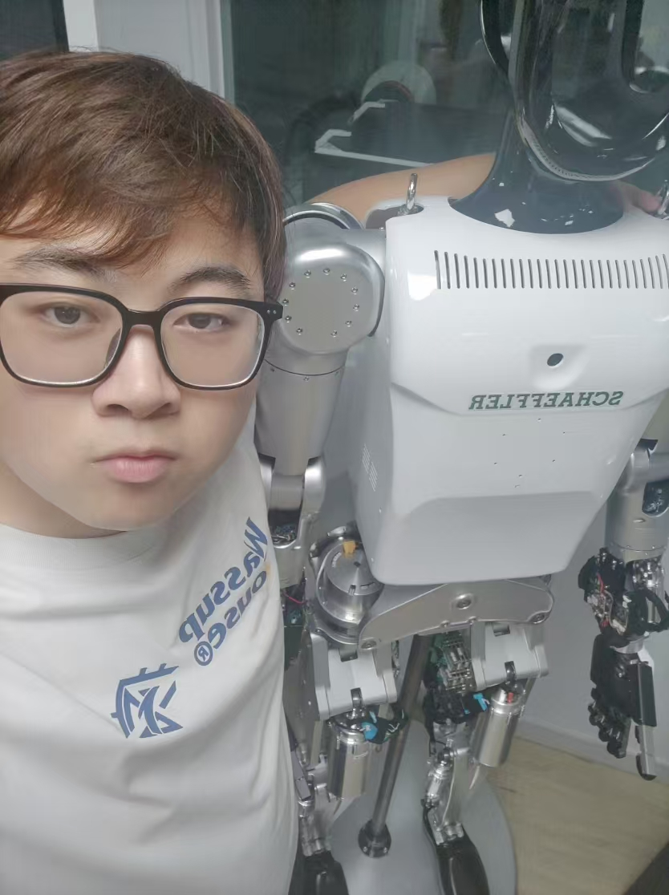

Researcher / Robotics & Embodied AI
Reinforcement Learning · Control · World Models
Email: YUANZHUO002@e.ntu.edu.sg
GitHub:
zhangyuanzhuo-ntu
I am an incoming Ph.D. student (Spring 2027) at the School of Mechanical and Aerospace Engineering (MAE), Nanyang Technological University (NTU), Singapore. My research focuses on embodied intelligence and robot learning, particularly reinforcement learning and control for legged robots and mobile manipulation.